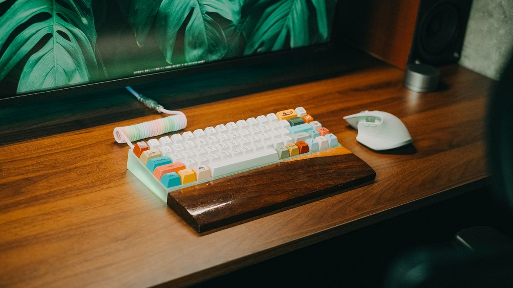
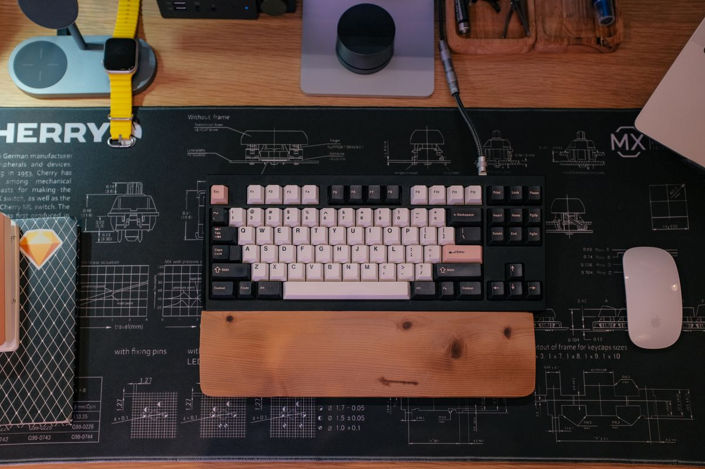
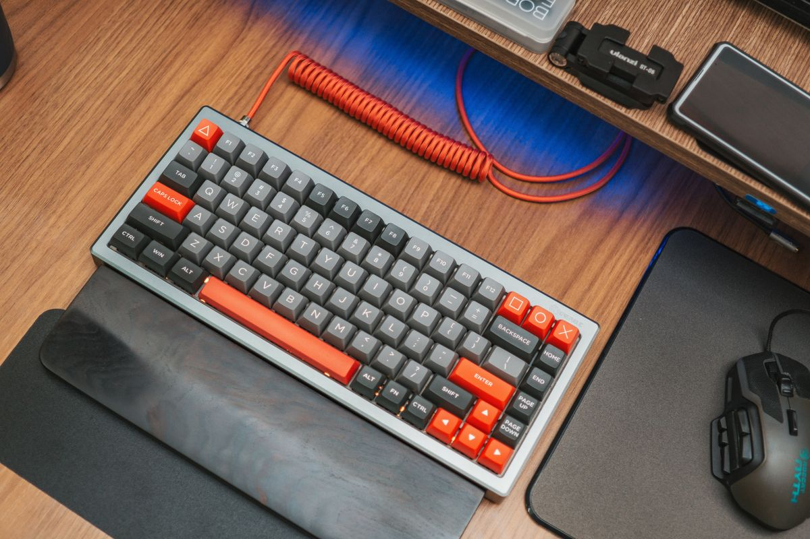
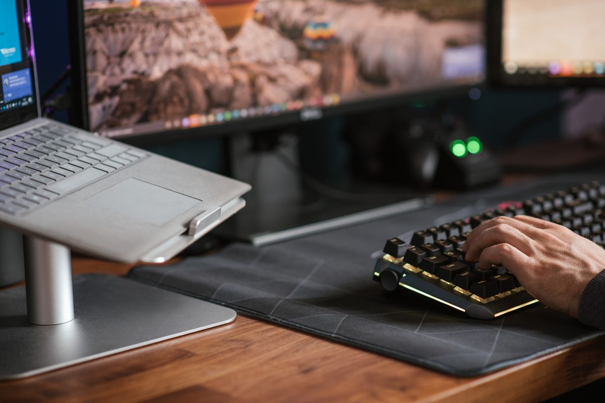

คีย์บอร์ด Ergonomic แบบแยกซ้าย-ขวา 2026: ทางออกของคนพิมพ์งานทั้งวันแล้วปวดข้อมือ
คีย์บอร์ด ergonomic แบบแยกซ้าย-ขวา (split keyboard) ช่วยลดอาการปวดข้อมือจากการพิมพ์งานทั้งวัน รู้จักว่ามันช่วยอะไร เลือกอย่างไร และรุ่นแบบไหนเหมาะกับใคร
อัปเดต กรกฎาคม 2026
ถ้าคุณนั่งพิมพ์งานหน้าจอวันละ 6-8 ชั่วโมงแล้วเริ่มรู้สึกตึงที่ข้อมือ ปวดร้าวขึ้นแขน หรือชานิ้วช่วงบ่าย ๆ นั่นคือสัญญาณที่ร่างกายกำลังบอกว่าท่าพิมพ์ของคุณไม่เป็นมิตรกับข้อต่อเท่าไหร่ คีย์บอร์ดทั่วไปบังคับให้เราหุบข้อศอกเข้าหากันและบิดข้อมือออกด้านนอกโดยไม่รู้ตัว ซึ่งเป็นท่าที่เส้นเอ็นต้องทำงานหนักตลอดเวลา คีย์บอร์ด ergonomic แบบแยกซ้าย-ขวา (split keyboard) ถูกออกแบบมาเพื่อแก้ปัญหานี้โดยตรง บทความนี้จะพาไปรู้จักว่ามันช่วยอะไร เลือกอย่างไร และรุ่นแบบไหนเหมาะกับใคร
ทำไมคีย์บอร์ดแบบแยกถึงดีต่อข้อมือ
หัวใจของคีย์บอร์ด split คือการแยกกลุ่มปุ่มออกเป็นสองฝั่ง ทำให้คุณวางมือทั้งสองข้างในแนวที่ตรงกับไหล่ตามธรรมชาติ ข้อศอกไม่ต้องหุบ ข้อมือไม่ต้องบิด และหลายรุ่นยังยกกลางคีย์บอร์ดให้สูงขึ้นเป็นทรงหลังคา (tenting) เพื่อให้ฝ่ามือเอียงเข้าหากันเล็กน้อยแทนที่จะคว่ำราบ ท่านี้ลดแรงกดที่เส้นประสาทบริเวณข้อมือ ซึ่งเป็นต้นเหตุของอาการชาและกลุ่มอาการ carpal tunnel
ข้อดีอีกอย่างที่คนมักมองข้ามคือ เมื่อสองฝั่งแยกกันได้ คุณสามารถขยับให้ห่างเท่าที่สบายและวางเมาส์หรือ trackpad ไว้ตรงกลางหรือชิดตัวได้มากขึ้น ลดการเอื้อมแขนไปหยิบเมาส์ซ้ำ ๆ ตลอดวัน ซึ่งเป็นอีกจุดที่ทำให้ไหล่ล้าโดยไม่รู้ตัว
รุ่นแนะนำตามงบและระดับการใช้งาน

สำหรับมือใหม่ที่อยากลองแบบไม่เจ็บตัว ลองมองหาคีย์บอร์ด ergonomic ทรงโค้งชิ้นเดียว (แบบ contoured wave) ก่อน แม้ยังไม่แยกออกจากกันจริง แต่ก็แบ่งกลุ่มปุ่มซ้าย-ขวาและมีที่รองข้อมือในตัว เป็นสะพานเปลี่ยนผ่านที่ดี ราคาเข้าถึงง่ายและไม่ต้องปรับตัวนาน เหมาะกับคนที่ยังไม่แน่ใจว่าจะชอบไหม
คีย์บอร์ด Ergonomic ทรงโค้งพร้อมที่รองข้อมือ
สำหรับคนที่พิมพ์เยอะและต้องการปรับองศาได้ คีย์บอร์ด split ที่แยกออกเป็นสองชิ้นจริงและปรับ tenting ได้จะให้ผลลัพธ์ด้านสุขภาพชัดเจนที่สุด มองหารุ่นที่มีขาปรับมุมและเชื่อมต่อได้ทั้งสายและไร้สาย เพื่อให้จัดวางบนโต๊ะได้อิสระ
คีย์บอร์ด Split ปรับองศา Tenting ได้
สำหรับสายพิมพ์จริงจังและ productivity ขั้นสูง คีย์บอร์ด split เชิงกลแบบ mechanical ที่รองรับการตั้งค่าปุ่ม (remap) และ layer ได้ จะช่วยให้คุณลดการขยับมือออกจากตำแหน่งพัก วางฟังก์ชันที่ใช้บ่อยไว้ใต้นิ้วโป้ง เพิ่มความเร็วในการทำงานระยะยาว แลกกับช่วงปรับตัวที่นานกว่าเล็กน้อย
คีย์บอร์ด Split Mechanical ตั้งค่าปุ่มได้
เกณฑ์การเลือกซื้อที่ควรพิจารณา

ระยะและองศาที่ปรับได้ สิ่งสำคัญที่สุดคือคีย์บอร์ดต้องปรับให้เข้ากับสรีระของคุณ ไม่ใช่ให้คุณปรับตัวเข้าหามัน มองหารุ่นที่แยกสองฝั่งได้จริงและปรับ tenting ได้อย่างน้อย 2-3 ระดับ
ที่รองข้อมือ ถ้ารุ่นนั้นไม่มีที่รองข้อมือในตัว ควรเผื่องบซื้อ palm rest แยกมาใช้คู่กัน เพราะการปล่อยข้อมือลอยจะทำให้ประโยชน์ของ ergonomic หายไปเกือบหมด
การเชื่อมต่อและความหน่วง ถ้าใช้ไร้สาย ให้เลือกที่รองรับ Bluetooth เวอร์ชันใหม่หรือมีดองเกิล 2.4GHz เพื่อความเสถียร ส่วนสายงานที่ต้องพิมพ์แม่นยำ การใช้สายจะให้ความหน่วงต่ำที่สุด
เลย์เอาต์และช่วงปรับตัว คีย์บอร์ด split บางรุ่นลดจำนวนปุ่มลงมาก (แบบ columnar) ซึ่งพิมพ์สบายกว่าเมื่อชินแล้ว แต่ต้องใช้เวลาปรับตัว 1-2 สัปดาห์ ถ้าคุณรับงานด่วนตลอดและไม่มีเวลาฝึก ให้เริ่มจากเลย์เอาต์ที่ใกล้เคียงคีย์บอร์ดปกติก่อน
วัสดุและสวิตช์ สำหรับคนที่พิมพ์ทั้งวันในออฟฟิศร่วมกับคนอื่น สวิตช์แบบเสียงเบา (silent/linear) จะไม่รบกวนเพื่อนร่วมงาน ส่วนคนที่ทำงานคนเดียวเลือกตามความชอบสัมผัสได้เต็มที่
เคล็ดลับปรับตัวช่วงแรก

อย่าเพิ่งท้อถ้าสัปดาห์แรกพิมพ์ช้าลงและผิดบ่อย นี่เป็นเรื่องปกติของทุกคนที่เปลี่ยนมาใช้ split keyboard สมองต้องสร้างแผนที่การเคลื่อนไหวใหม่ แนะนำให้เริ่มใช้จริงในวันที่งานไม่เร่ง วางสองฝั่งให้กว้างพอดีกับหัวไหล่ ไม่ต้องกว้างเกินไปในช่วงแรก และค่อย ๆ เพิ่มองศา tenting ทีละน้อย ส่วนใหญ่จะกลับมาพิมพ์เร็วเท่าเดิมภายในสองสัปดาห์ พร้อมกับข้อมือที่สบายขึ้นชัดเจน
สรุป
คีย์บอร์ด ergonomic แบบแยกซ้าย-ขวาไม่ใช่แค่ของเล่นสาย gadget แต่เป็นการลงทุนกับสุขภาพข้อมือและไหล่ในระยะยาวสำหรับคนที่ต้องพิมพ์งานทุกวัน ถ้าคุณเพิ่งเริ่มและอยากลองแบบปลอดภัย เริ่มจากทรงโค้งชิ้นเดียวได้ ถ้าพิมพ์เยอะและอยากได้ผลเต็มที่ ให้ขยับไปที่รุ่นแยกสองชิ้นปรับ tenting และถ้าคุณเป็นสายพิมพ์จริงจัง คีย์บอร์ด split mechanical ที่ตั้งค่าปุ่มได้จะคุ้มค่าที่สุด เลือกให้เหมาะกับสรีระและจังหวะงานของตัวเอง แล้วข้อมือจะขอบคุณคุณในอีกไม่กี่สัปดาห์ข้างหน้า
บทความนี้จัดทำเพื่อแนะนำสินค้า อาจมีลิงก์พันธมิตร (affiliate) ประกอบ เมื่อคุณซื้อผ่านลิงก์ เราอาจได้รับค่าคอมมิชชั่นโดยที่คุณไม่ต้องจ่ายเพิ่ม